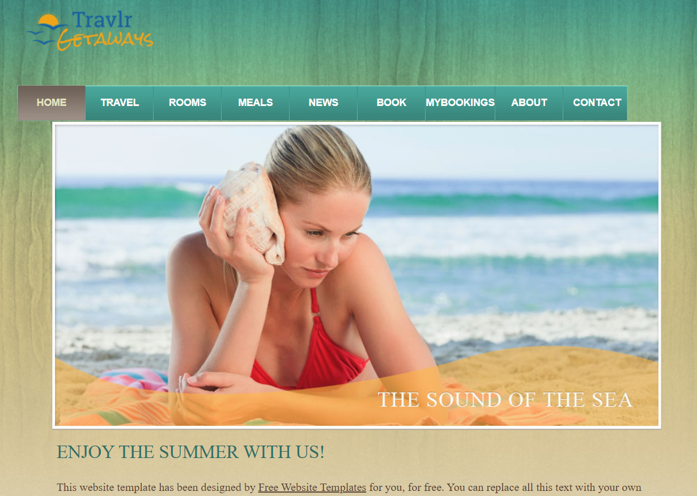

Software Design and Engineering
The artifact I selected is the Travlr Getaways web application. I originally developed this in CS 465 Full Stack Development. The application uses a hybrid approach which combines server rendered views with Express and Handlebars, and a Single Page Application (SPA) for administrative use built with Angular. This version represented a transitional architecture, common in full-stack applications that are being gradually modernized.
I chose this artifact because it demonstrates a transition from legacy server-side rendering to a modern SPA approach using React. The planned enhancements allow me to show several software engineering skills like designing component-based UIs, making use of RESTful APIs, implementing client-side routing, and using concurrently to manage the application structure. These skills are useful in the current software development environments. Replacing the Handlebars with React shows a forward-thinking approach to scalability and maintainability. With these enhancements I showed frontend framework adoption, state and route management, and the ability to integrate modern tools into existing systems.
I did meet the course outcomes that I had planned for with these enhancements. These enhancements met Outcome 1: Built collaborative environments that enable diverse audiences, Outcome 2: Designing and delivering visual communications adapted to audience and context, as seen in the improved client-side interface, Outcome 3: Evaluating computing solutions using sound design principles, and Outcome 4: Employing innovative techniques (React, concurrently, API-driven architecture) to implement value-driven software solutions. I do not anticipate any updates to my outcome coverage plan.
During the enhancement process, I learned how to translate traditional server rendered layouts into React’s declarative paradigm. This caused me to rethink how data flows through an application. I did face some challenges during the enhancement process. I discovered that Express and CRA both defaulted to port 3000, this showed me the importance of environment configuration. Another challenge was how to adapt a static HTML template to serve the CRA shell. Also, I needed to ensure existing CSS and images loaded correctly, for this I needed a better understanding of CRA’s %PUBLIC_URL% conventions. Overall, the enhancements made helped me develop my skills in front-end architecture, how to configure a project properly, and the process of refactoring incrementally.
This is my artifact before I made my enhancements. https://github.com/Criswell-D/TravlrOriginal .
This is my artifact after I made my enhancements. https://github.com/Criswell-D/Travlr_v1 .